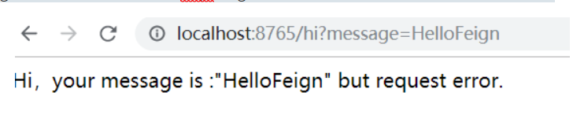
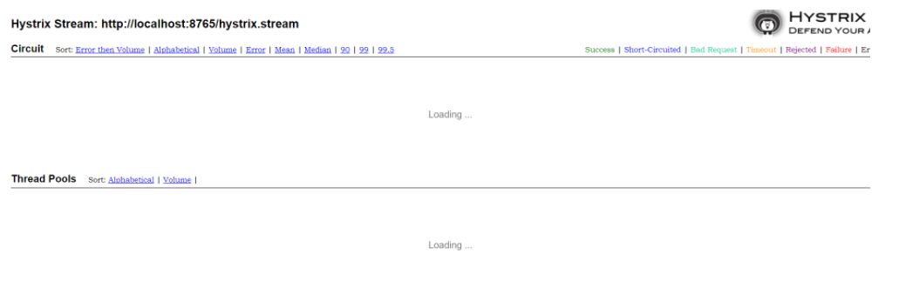
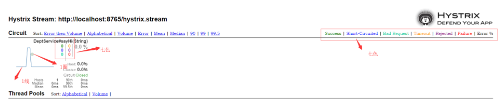

前面已经学习了服务注册与发现组件，负载均衡组件，这样我们的微服务系统已经可以使用了。为了保证其高可用，单个服务通常会集群部署。由于网络原因或者自身的原因，服务并不能保证 100% 可用，如果单个服务出现问题，调用这个服务就会出现线程阻塞，此时若有大量的请求涌入，Servlet 容器的线程资源会被消耗完毕，导致服务瘫痪。服务与服务之间的依赖性，故障会传播，会对整个微服务系统造成灾难性的严重后果，这就是服务故障的 “雪崩” 效应。
这就让需要对故障和延迟进行隔离和管理，以便单个依赖关系的失败，不能取消整个应用程序或系统。
为了解决这个问题，业界提出了熔断器模型。
Hystrix是一个用于处理分布式系统的延迟和容错的开源库，在分布式系统里，许多依赖不可避免的会调用失败，比如超时、异常等，Hystrix能够保证在一个依赖出问题的情况下，不会导致整体服务失败，避免级联故障，以提高分布式系统的弹性。
“断路器”本身是一种开关装置，当某个服务单元发生故障之后，通过断路器的故障监控（类似熔断保险丝），向调用方返回一个符合预期的、可处理的备选响应（FallBack），而不是长时间的等待或者抛出调用方无法处理的异常，这样就保证了服务调用方的线程不会被长时间、不必要地占用，从而避免了故障在分布式系统中的蔓延，乃至雪崩。
这个组件很好理解，就是为了保证服务的高可用，而对一些故障的服务进行处理，避免整个服务都挂掉。
服务调用方有两种方式Ribbon与Feign，现在Ribbon上使用，首先在项目上
添加依赖
<dependency>
<groupId>org.springframework.cloud</groupId>
<artifactId>spring-cloud-starter-netflix-hystrix</artifactId>
</dependency>
@EnableDiscoveryClient
@SpringBootApplication
@EnableHystrix
public class ConsumerDeptRibbonApplication {
public static void main(String[] args) {
SpringApplication.run(ConsumerDeptRibbonApplication.class, args);
}
}在 Service 中增加 @HystrixCommand 注解
在需要有熔断机制的方法上添加 @HystrixCommand，属性fallbackMethod是熔断时返回的方法：
@Service
public class DeptService {
@Autowired
private RestTemplate restTemplate;
@HystrixCommand(fallbackMethod = "hiError")
public String sayHi(String message) {
//这里指指定了服务名称，不用管ip 地址与端口
return restTemplate.getForObject("http://SPRING-CLOUD-LEARN-PROVIDER-DEPT/hi?message=" + message, String.class);
}
public String hiError(String message) {
return "Hi，your message is :\"" + message + "\" but request error.";
}
}这样就已经完成了开发，我们进行相应的测试
启动spring-cloud-learn-eureka注册中心，启动部门服务提供者spring-cloud-learn-provider-dept，然后启动spring-cloud-learn-consumer-dept-ribbon，这个时候服务正常，我们能得到正常的反馈，与之前相同，然我们停掉spring-cloud-learn-provider-dept，然后再刷新http://localhost:8764/hi?message=hello，会发现：
feign:
hystrix:
enabled: true然后我们创建一个与服务对应相关的专门应对熔断的类：
@Component
public class DeptServiceHystrix implements DeptService {
@Override
public String sayHi(String message) {
return "Hi，your message is :\"" + message + "\" but request error.";
}
}
//服务提供者的名字
@FeignClient(value = "spring-cloud-learn-provider-dept", fallback = DeptServiceHystrix.class)
public interface DeptService {
@RequestMapping(value = "hi", method = RequestMethod.GET)
String sayHi(@RequestParam(value = "message") String message);
}然后启动spring-cloud-learn-consumer-dept-feign，在部门服务挂掉之后，也能实现熔断效果

还有一种创建工厂的方式，新建一个DeptServiceFallbackFactory：
@Component
public class DeptServiceFallbackFactory implements FallbackFactory<DeptService> {
@Override
public DeptService create(Throwable throwable) {
return new DeptService() {
@Override
public String sayHi(String message) {
return "Hi，your message is :\"" + message + "\" but request error.";
}
};
}
}除了隔离依赖服务的调用以外，Hystrix还提供了准实时的调用监控（Hystrix Dashboard），Hystrix会持续地记录所有通过Hystrix发起的请求的执行信息，并以统计报表和图形的形式展示给用户，包括每秒执行多少请求多少成功，多少失败等。Netflix通过hystrix-metrics-event-stream项目实现了对以上指标的监控。Spring Cloud也提供了Hystrix Dashboard的整合，对监控内容转化成可视化界面。
在 Ribbon 和 Feign 项目增加 Hystrix 仪表盘功能，两个项目的改造方式相同：
在 pom.xml 中增加依赖
<dependency>
<groupId>org.springframework.cloud</groupId>
<artifactId>spring-cloud-starter-netflix-hystrix-dashboard</artifactId>
</dependency>
@SpringBootApplication
@EnableDiscoveryClient
@EnableFeignClients
@EnableHystrixDashboard
public class ConsumerDeptFeignApplication {
public static void main(String[] args) {
SpringApplication.run(ConsumerDeptFeignApplication.class, args);
}
}创建 hystrix.stream 的 Servlet 配置
Spring Boot 2.x 版本开启 Hystrix Dashboard 与 Spring Boot 1.x 的方式略有不同，需要增加一个 HystrixMetricsStreamServlet 的配置，代码如下：
@Configuration
public class HystrixDashboardConfiguration {
@Bean
public ServletRegistrationBean getServlet() {
HystrixMetricsStreamServlet streamServlet = new HystrixMetricsStreamServlet();
ServletRegistrationBean registrationBean = new ServletRegistrationBean(streamServlet);
registrationBean.setLoadOnStartup(1);
registrationBean.addUrlMappings("/hystrix.stream");
registrationBean.setName("HystrixMetricsStreamServlet");
return registrationBean;
}
}
1：Delay：该参数用来控制服务器上轮询监控信息的延迟时间，默认为2000毫秒，可以通过配置该属性来降低客户端的网络和CPU消耗。
2：Title：该参数对应了头部标题Hystrix Stream之后的内容，默认会使用具体监控实例的URL，可以通过配置该信息来展示更合适的标题。
点击进入：

这个时候还没有数据，学习下如何看着数据，我们可以刷新下之前调用服务的接口

七色：按照结果下显示各种颜色
实心圆：共有两种含义。它通过颜色的变化代表了实例的健康程度，它的健康度从绿色<黄色<橙色<红色递减。 该实心圆除了颜色的变化之外，它的大小也会根据实例的请求流量发生变化，流量越大该实心圆就越大。所以通过该实心圆的展示，就可以在大量的实例中快速的发现故障实例和高压力实例。
曲线：用来记录2分钟内流量的相对变化，可以通过它来观察到流量的上升和下降趋势。
这个自己实践下就比较好理解了。